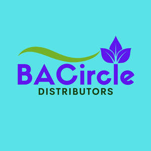

Trade Mark Journal No.2025/039 26 September 2025
UK00004264140 15 September 2025 (35)

- Class 35
- Presentation of goods and services; Consultancy services relating to the procurement of goods and services; Retail services in relation to baked goods; Wholesale services in relation to baked goods; Purchasing of goods and services for other businesses; Marketing the goods and services of others; Procurement services for others [purchasing goods and services for other businesses]; Advertising services relating to the sale of goods; Retail services relating to sporting goods; Promotion of goods and services for others; Market analysis services relating to the availability of goods; Wholesale services relating to sporting goods; Promoting the goods and services of others through the distribution of discount cards; Retail services in relation to foodstuffs; Goods or services price quotations; Market analysis services relating to the sale of goods; Commercial administration of the licensing of the goods and services of others; Providing consumer information relating to goods and services; Wholesale services in relation to foodstuffs; Marketing the goods and services of others by distributing coupons; Provision of space on web-sites for advertising goods and services; Procurement of contracts for the purchase and sale of goods and services; Advertising particularly services for the promotion of goods; Mail order retail services related to foodstuffs; Procurement of contracts for the purchase and sale of goods and services for others; Provision of space on websites for advertising goods and services; Promoting the goods and services of others; Advisory and consultancy services relating to the procurement of goods for others; Retail services in relation to bakery products; Promoting the goods and services of others by arranging for sponsors to affiliate their goods and services with sporting activities; Retail services in relation to educational supplies; Promotion of goods and services through sponsorship; Promoting the sale of goods and services of others through the distribution of printed material and promotional contests; Retail services relating to bakery products; Retail services in relation to stationery supplies; Wholesale services in relation to educational supplies; Distribution of products for advertising purposes; Advertising services relating to the transport industries; Arranging of contracts for the purchase and sale of goods and services, for others; Advertising services relating to financial services; Promoting the goods and services of others by arranging for sponsors to affiliate their goods and services with awards programs; Retail services via catalogues related to foodstuffs; Retail services in relation to agricultural equipment; Outsourcing services in the nature of arranging procurement of goods for others; Business intermediary and advisory services in the field of selling products and rendering services; Retail services in relation to sanitation equipment; Wholesale services in relation to agricultural equipment; Promoting the goods and services of others by arranging for sponsors to affiliate their goods and services with sports competitions; Retail services relating to delicatessen products; Retail services in relation to gardening products; Retail services relating to food; Alcoholic beverage procurement services for others [purchasing goods for other businesses]; Wholesale services in relation to sanitation equipment; Wholesale services in relation to stationery supplies; Retail services in relation to toiletries; Procurement services; Wholesale services in relation to furnishings; Retail services in relation to bags; Wholesale services in relation to horticulture products; Retail services in relation to furnishings; Retail services in relation to horticulture products; Retail services in relation to weapons; Retail services in relation to audio-visual equipment; Wholesale services in relation to audio-visual equipment; Retail services in relation to bicycles; Demonstration of goods and services by electronic means, also for the benefit of the so-called teleshopping and homeshopping services; Marketing services; Retail services in relation to tableware; Retail services relating to horticultural products; Providing online marketplaces for sellers of goods and or services; Retail services in relation to domestic electronic equipment; Advertising the goods and services of online vendors via a searchable online guide; Online advertising services; Providing a searchable online advertising guide featuring the goods and services of online vendors; Providing a searchable online advertising guide featuring the goods and services of other on-line vendors on the internet; Online retail services in relation to downloadable virtual footwear; Online retail services in relation to downloadable virtual clothing; Online ordering services; Online retail services in relation to downloadable virtual handbags; Online retail services relating to clothing; Online retail services for downloadable virtual clothing; Online retail services relating to luggage; Online retail services relating to handbags; Online retail services relating to toys; Online retail services relating to cosmetics; Online retail services in relation to downloadable virtual headwear; Online retail services relating to jewelry; Online retail services for downloadable digital music; Online data processing services; Online retail store services in relation to clothing; Online business networking services; Online retail store services relating to clothing; On-line advertising and marketing services; Online retail services in relation to downloadable virtual works of art; Business information services provided online from a global computer network or the internet; Providing online commercial directory information services; Provision of an online marketplace for buyers and sellers of goods and services; On-line auctioneering services via the Internet; Online community management services; Business information services provided online from a computer database or the internet; Retail services in relation to downloadable electronic publications; Retail services via global computer networks related to foodstuffs; Online retail store services relating to cosmetic and beauty products; Provision of an on-line marketplace for buyers and sellers of goods and services; Retail services in relation to downloadable virtual footwear; Providing on-line auction services; Provision of online financial services comparisons; Promoting the goods and services of others via a global computer network; Retail services in relation to downloadable virtual handbags; Retail services in relation to downloadable virtual clothing; Commercial information services, via the internet; On-line data processing services; Promoting the goods and services of others via computer and communication networks; Presentation of companies and their goods and services on the Internet; Online advertising network matching services for connecting advertisers to websites; Online retail services for downloadable and pre-recorded music and movies; Retail services via catalogues related to beer; Business information services provided on-line from a computer database or the internet; Digital advertising services; Mail order retail services for clothing; Retail services in relation to downloadable virtual headwear; Online retail services for downloadable ring tones; Retail services via global computer networks related to beer; Mail order retail services related to beer; Dissemination of advertising via online communications networks; Advertising services for the promotion of e-commerce; Advertising services provided via the internet; Mail order retail services for cosmetics; Retail services in relation to downloadable music files; Promoting the goods and services of others over the Internet; Arranging subscriptions to Internet services; Provision of commercial information from online databases; Online marketing; Retail services via global computer networks related to non-alcoholic beverages; Provision of online price comparison services; Mail order retail services for clothing accessories; Retail services in relation to pet products; Retail services in relation to clothing; Unmanned retail store services relating to food; Retail services in relation to bicycle accessories; Retail services in relation to dairy products; Retail services in relation to furniture; Retail services in relation to clothing accessories; Retail services connected with the sale of furniture; Mail order retail services connected with clothing accessories; Retail services in relation to fabrics; Retail services in relation to hair products; Retail services in relation to car accessories; Retail services in relation to confectionery; Retail services in relation to saddlery; Retail services in relation to refrigerating equipment; Retail services in relation to meats; Retail services relating to clothing; Retail services in relation to heating equipment; Retail services in relation to jewellery; Retail services in relation to sporting equipment; Retail services in relation to toys; Retail services in relation to cooling equipment; Retail services relating to furniture; Retail services in relation to luggage; Retail services in relation to teas; Retail store services in the field of clothing; Retail services in relation to food cooking equipment; Retail services in relation to cookware; Display services for merchandise; Wholesale services in relation to dairy products; Wholesale services in relation to furniture; Wholesale services in relation to clothing; Retail services in relation to vehicles; Wholesale services in relation to toiletries; Retail services in relation to cutlery; Commercial information services; Retail services in relation to information technology equipment; Import and export services; Import and export agencies services; Import and export agency services; Export promotion services; Import agency services; Export agency services; Wholesale services in relation to domestic electronic equipment; Goods import-export agencies; Wholesale services in relation to domestic electrical equipment; Foreign trade information (Services for the provision of -); Services for provision of foreign trade information; Wholesale services in relation to weapons; Retail services in relation to domestic electrical equipment; Wholesale services in relation to meats; Wholesale services in relation to refrigerating equipment; Wholesale services in relation to food cooking equipment; Wholesale services in relation to luggage; Wholesale services in relation to bags; Wholesale services in relation to fabrics; Purchasing services; Promoting the goods and services of others by distributing coupons; Promoting the goods and services of others through the administration of sales and promotional incentive schemes involving trading stamps; Procuring of contracts for the purchase and sale of goods; Wholesale services relating to furniture; Advisory services relating to the purchase of goods on behalf of business; Promoting the sale of goods and services of others through promotional events; Retail services relating to furs; Wholesale services in relation to sporting equipment; Wholesale services relating to clothing; Procurement of contracts for others relating to the sale of goods; Wholesale services relating to furs; Wholesale services in relation to vehicles; Arranging of contracts for others for the buying and selling of goods; Media buying services; Wholesale services in relation to heating equipment; Wholesale services in relation to confectionery; Wholesale services in relation to tableware; Wholesale services in relation to toys; Wholesale services in relation to footwear; Wholesale ordering services; Wholesale services in relation to tobacco; Wholesale services in relation to cookware; Wholesale services in relation to beer; Wholesale services in relation to saddlery; Wholesale services in relation to jewellery; Wholesale services in relation to yarns; Wholesale services in relation to desserts; Wholesale services in relation to cutlery; Wholesale services in relation to seafood; Wholesale services in relation to lubricants; Wholesale services in relation to teas; Wholesale services relating to jewelry; Wholesale services in relation to fuels; Wholesale services in relation to horticulture equipment; Wholesale services in relation to sanitary installations; Wholesale services in relation to lighting; Wholesale services in relation to cocoa; Wholesale services in relation to chocolate; Wholesale services relating to candy; Wholesale services in relation to cooling equipment; Wholesale services in relation to construction equipment; Wholesale services in relation to water supply equipment; Wholesale services relating to flowers; Wholesale services in relation to art materials; Wholesale services in relation to earthmoving equipment; Wholesale services in relation to games; Wholesale services in relation to heaters; Wholesale services in relation to freezing equipment; Wholesale services in relation to coffee; Wholesale services relating to automobile accessories; Wholesale services in relation to umbrellas; Wholesale services relating to electronic household appliances; Wholesale services in relation to headgear; Wholesale services in relation to sorbets; Wholesale services in relation to chemicals for use in agriculture; Wholesale services relating to automobile parts; Advertising services relating to cosmetics; Advertising services relating to pharmaceutical products; Advertising services relating to clothing; Advertising services relating to pharmaceuticals; Retail services relating to jewelry; Retail services in relation to fashion accessories; Retail services in relation to beauty implements for animals; Retail services in relation to lubricants; Retail services in relation to footwear; Commercial information and advice services for consumers in the field of make-up products; Retail services connected with the sale of clothing and clothing accessories; Retail services in relation to art materials; Business merchandising display services; Retail services relating to automobile accessories; Retail services in relation to sporting articles; Unmanned retail store services relating to drink; Retail services connected with the sale of subscription boxes containing food; Retail services in relation to beer; Retail services in relation to seafood; Retail services in relation to food preparation implements; Retail services relating to candy; Retail services in relation to water supply equipment; Retail services in relation to kitchen appliances; Mail order retail services related to non-alcoholic beverages; Retail services relating to fruit; Retail services in relation to desserts; Distribution of advertising materials; Sales promotion services; Sales management services; Retail services relating to audiovisual equipment; Trade promotional services; Advertising services to promote the sale of beverages; Advertising services for the promotion of beverages; Retail services in relation to horticulture equipment; Retail services relating to horticultural equipment; Advertising services; Retail services relating to food preparation implements; Wholesale services in relation to food preparation implements; Accounting services relating to costs for farming enterprises; Retail services in relation to bedding for animals; Retail services in relation to hygienic implements for animals; Retail services in relation to chemicals for use in agriculture; Retail services in relation to building materials; Retail services in relation to construction equipment; Retail services in relation to yarns; Comparison shopping services; Promotion of goods and services through sponsorship of sports events; Consumer market information services; Market analysis services; Market assessment services; Market reporting services; Market research services; Market information services relating to market statistics; Providing market intelligence services; Market analysis services relating to the availability of antiques; Market study services; Providing market information in relation to consumer products; Retail services in relation to beauty implements for humans; Wholesale services in relation to beauty implements for animals; Wholesale services in relation to beauty implements for humans; Commercial information and advice services for consumers in the field of beauty products; Advertising services relating to motor cars; Advertising services relating to the sale of motor vehicles; Retail services relating to automobile parts; Retail services in relation to medical instruments.
Bacircle Distributors Ltd